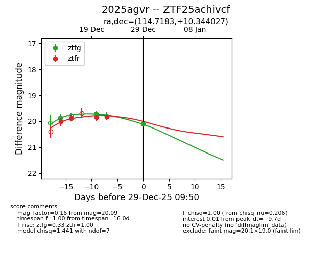
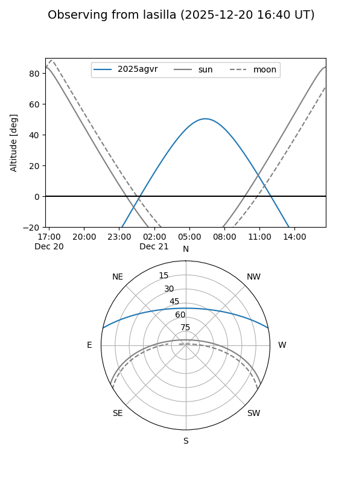
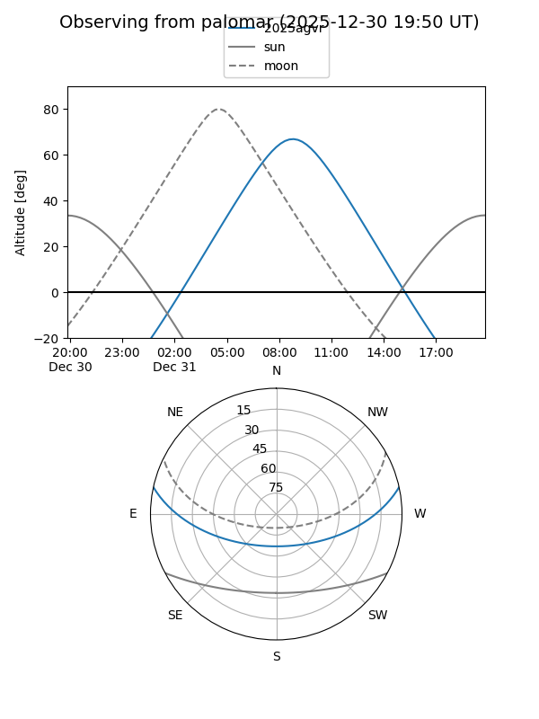

2025agvr
Target 2025agvr at 2025-12-20 08:00
Aliases and brokers:
FINK: fink-portal.org/ZTF25achivcf
Lasair: lasair-ztf.lsst.ac.uk/objects/ZTF25achivcf
ALeRCE: alerce.online/object/ZTF25achivcf
TNS: wis-tns.org/object/2025agvr
YSE: ziggy.ucolick.org/yse/transient_detail/2025agvr
alt names
ZTF25achivcf (ztf,fink_ztf)
2025agvr (tns,yse)
Coordinates:
equatorial (ra, dec) = 114.7183,+10.34403
equatorial (HMS+DMS) = 07:38:52.39,+10:20:38.50
galactic (l, b) = (208.9141,+15.17667)
Flags:
Photometry:
last ztfg=19.70, ztfr=19.87
2 ztfg, 2 ztfr detections
Lightcurve

Visibility


Additional plots